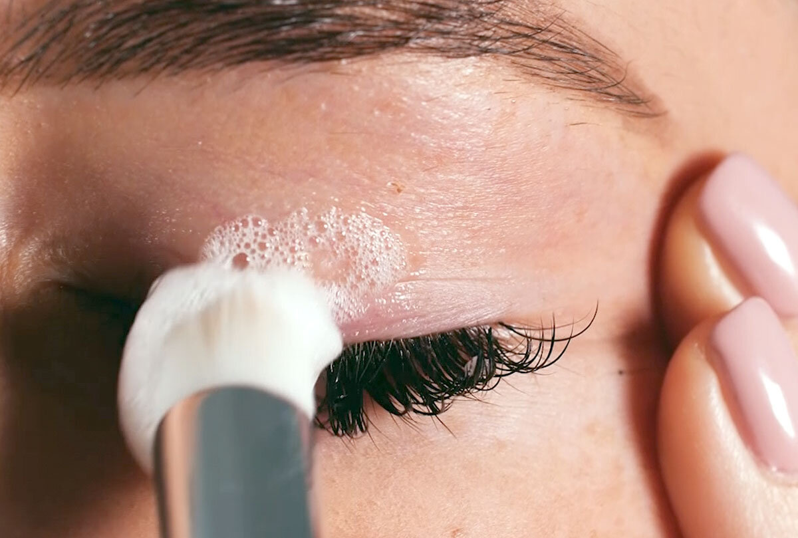

The first 48 hours after your eyelash extensions are applied are crucial. During this time, the adhesive is still bonding, and proper care ensures your lashes last longer and stay in great shape.
Here are some key things to avoid during the first 48 hours:
Refrain from touching or rubbing your new extensions.
Avoid heat, steam, and hot water (e.g., saunas, hot showers, swimming pools, cooking steam).
Steer clear of eye makeup and cosmetic products near the eye area.
Skip facials and any beauty treatments involving heat.
Sleep on your back to avoid pressing your lashes against the pillow.
Avoid brushing or combing your lashes until after 24 hours.
Once the initial 48 hours have passed, it’s still important to follow certain care tips to extend the life of your extensions. Here are the top things to remember
Gently remove makeup each night, being careful not to rub your lashes.
Avoid oil-based products around the eyes, as oils can weaken the adhesive bond.
Use water-based makeup removers such as Nivea Gentle Eye Makeup Remover.
Use lint-free products when cleaning around your lashes (e.g., cotton buds or pads).
Treat your lashes delicately, avoiding any pulling or tugging.
Minimise visits to saunas or steam rooms, as high moisture levels and heat can weaken the bonds.
Avoid waterproof makeup, especially mascara or eyeliner, as it can be difficult to remove without damaging the extensions.
If you must use mascara, choose a water-based formula designed for eyelash extensions.
Never use an eyelash curler—this can damage both the extensions and your natural lashes.
Wash your lashes daily using a soft bristle brush and lash-safe cleanser to remove any buildup.
If you have oily skin, use blotting paper to keep oils away from your lashes.
After cleaning and drying your lashes, brush your extensions with a clean mascara wand to keep them neat.
Do not attempt to perm your lashes while wearing extensions.
Use a lint-free tissue or paper towel to dry your lashes after washing them.
It’s important to avoid products that can shorten the life of your extensions or irritate your eyes. Steer clear of oil-based products, waterproof makeup, and harsh cleansers. Using professional, extension-safe products will keep your lashes looking their best for longer.
With proper aftercare, not only will your eyelash extensions last longer, but your natural lashes will stay healthy too. Regular cleaning, gentle handling, and avoiding harsh products are key to maintaining both your extensions and natural lashes.